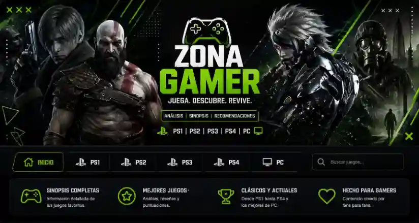
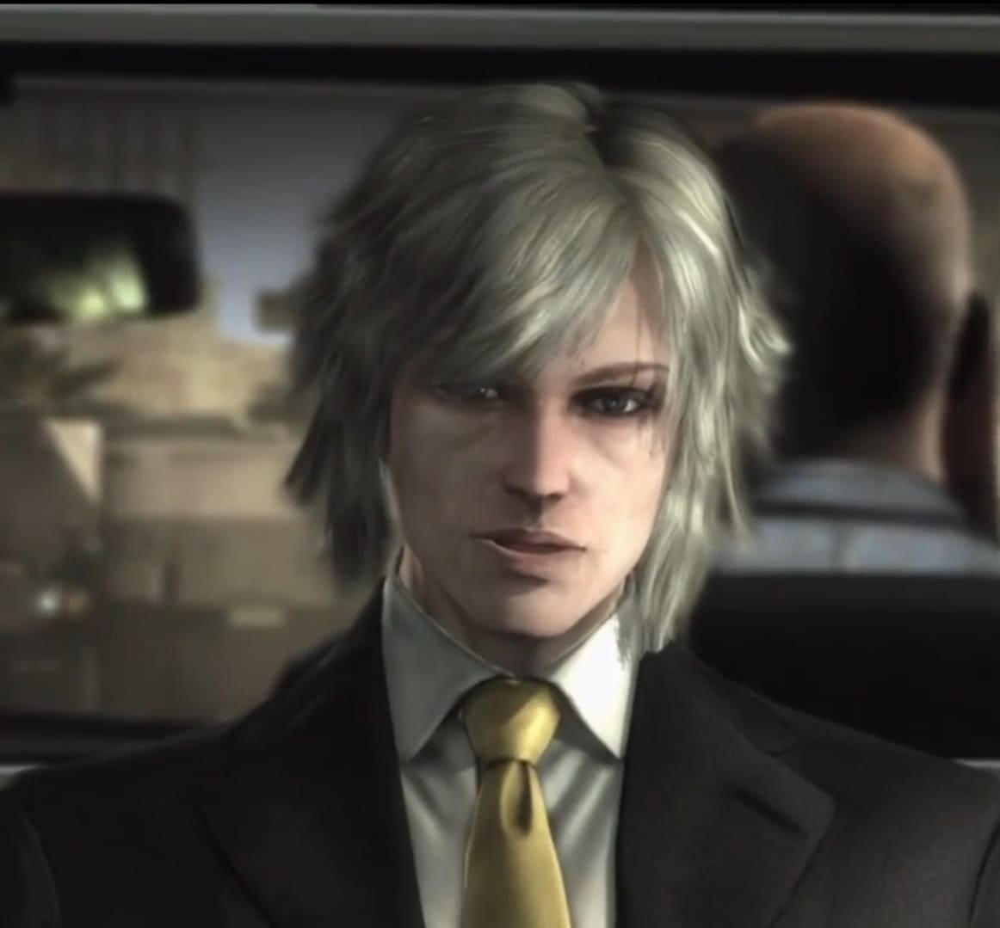
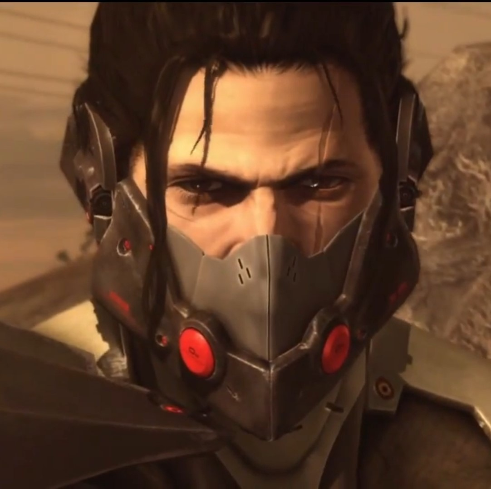
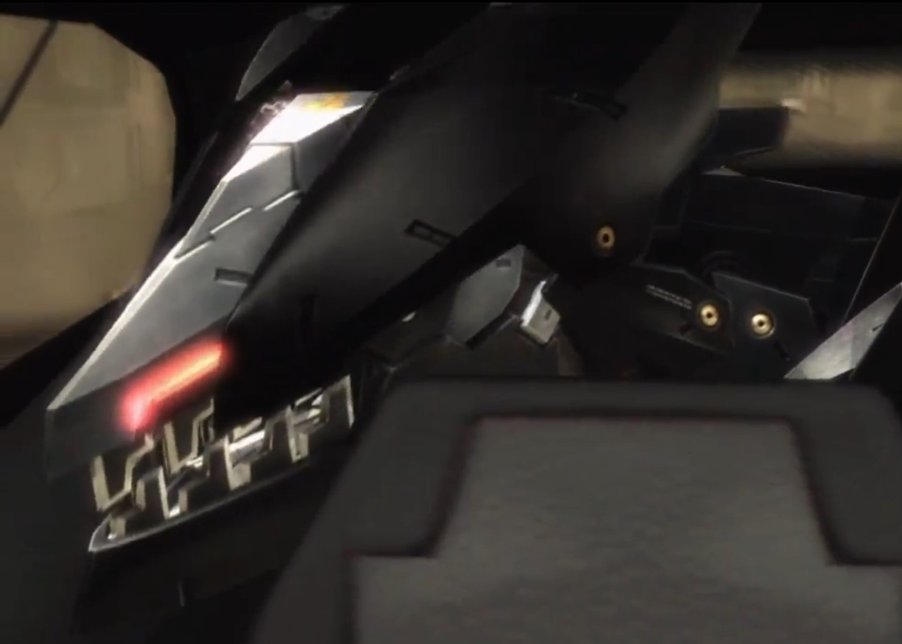
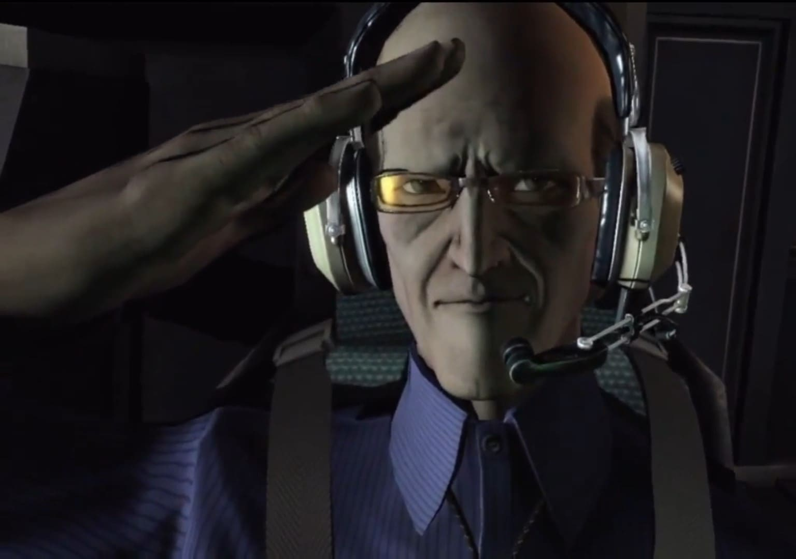

Zona Gamer es una página creada para fans de los videojuegos clásicos y modernos. Aquí encontrarás información completa de cada juego, incluyendo historia, personajes, plataformas, duración, soundtrack y mucho más.
La historia ocurre años después de los eventos de Metal Gear Solid 4. El mundo cambió completamente: las guerras ya no son controladas por gobiernos, sino por compañías militares privadas conocidas como PMC.
Raiden trabaja protegiendo al primer ministro africano N'mani, pero durante la misión aparece una organización terrorista liderada por el misterioso Samuel Rodrigues, conocido como Jetstream Sam.
Raiden es derrotado brutalmente. Pierde un ojo, su brazo izquierdo y casi muere. Luego es reconstruido con un cuerpo cyborg mucho más avanzado.
Desde ese momento inicia una misión para descubrir quién controla realmente las guerras. Lo que parecía una simple venganza termina revelando experimentos con niños soldados, manipulación política y un plan para crear una nueva economía basada en conflicto permanente.
Durante el viaje, Raiden debe aceptar su pasado como “Jack el Destripador”, la personalidad violenta que intentó reprimir durante años.
El juego mezcla acción exagerada, filosofía política, crítica al capitalismo militar y momentos completamente absurdos que terminaron convirtiéndose en memes legendarios.
Metal Gear Rising tiene uno de los sistemas de combate más rápidos y violentos de la generación PS3/Xbox 360.
El jugador controla a Raiden usando una katana de alta frecuencia capaz de cortar prácticamente cualquier objeto del escenario.
La mecánica principal es Blade Mode, un sistema que permite ralentizar el tiempo y cortar enemigos manualmente en cualquier dirección.
El combate recompensa reflejos rápidos, parrys precisos y agresividad constante. Cada jefe introduce nuevas mecánicas y exige dominar el sistema.

Ex niño soldado conocido como Jack el Destripador. Intentó dejar atrás su pasado, pero termina aceptando su naturaleza violenta para detener a Desperado.

Espadachín brasileño extremadamente habilidoso. Rival y espejo de Raiden. Su filosofía y estilo lo convirtieron en uno de los personajes más queridos.

Inteligencia artificial militar con apariencia de lobo. Cuestiona constantemente qué significa tener libre voluntad.

Científico encargado del soporte técnico de Raiden. Aporta humor y explicaciones sobre tecnología cyborg.
El primer jefe del juego. Una batalla gigantesca que sirve como introducción al nivel de destrucción que tendrá toda la aventura.
Cyborg francesa especialista en armas múltiples y control de pequeños robots.
Uno de los personajes más filosóficos del juego. Puede separar su cuerpo magnéticamente y habla sobre memes e ideologías.
Un monstruo obsesionado con la guerra. Representa la corrupción total de la industria militar.
El antagonista final. Un político absurdamente poderoso físicamente gracias a nanotecnología. Su pelea final es considerada una de las más épicas de los videojuegos.
La OST de Metal Gear Rising es una de las más icónicas de la historia gaming. Cada jefe tiene una canción propia con letras que representan su personalidad.
La música cambia dinámicamente durante las peleas, aumentando la intensidad cuando el combate llega a su punto máximo.
PS4, PS5, PC, Xbox Series X/S
12–16 horas
Capcom
2023
Seis años después de la destrucción de Raccoon City, Leon S. Kennedy trabaja como agente especial del gobierno de Estados Unidos. Su nueva misión es rescatar a Ashley Graham, la hija del presidente, quien fue secuestrada y llevada a una remota aldea europea.
Al llegar, Leon descubre que los habitantes están infectados por un extraño parásito llamado Las Plagas, capaz de controlar completamente a las personas y transformarlas en criaturas extremadamente violentas.
A medida que avanza por aldeas destruidas, castillos gigantes y laboratorios secretos, deberá enfrentarse a cultos religiosos, monstruos mutados y enemigos icónicos como El Gigante, los Garradores, Verdugo y Ramón Salazar.
El remake reconstruye completamente el clásico original con gráficos modernos, una atmósfera mucho más oscura y un combate más intenso y realista. La tensión nunca desaparece y cada zona presenta nuevos desafíos.
La administración de recursos vuelve a ser clave. Las balas son limitadas, los enemigos son agresivos y muchas veces sobrevivir depende de tomar decisiones rápidas bajo presión.
Resident Evil 4 Remake logra combinar perfectamente terror, acción y exploración, manteniendo la esencia del juego original mientras moderniza todas sus mecánicas.